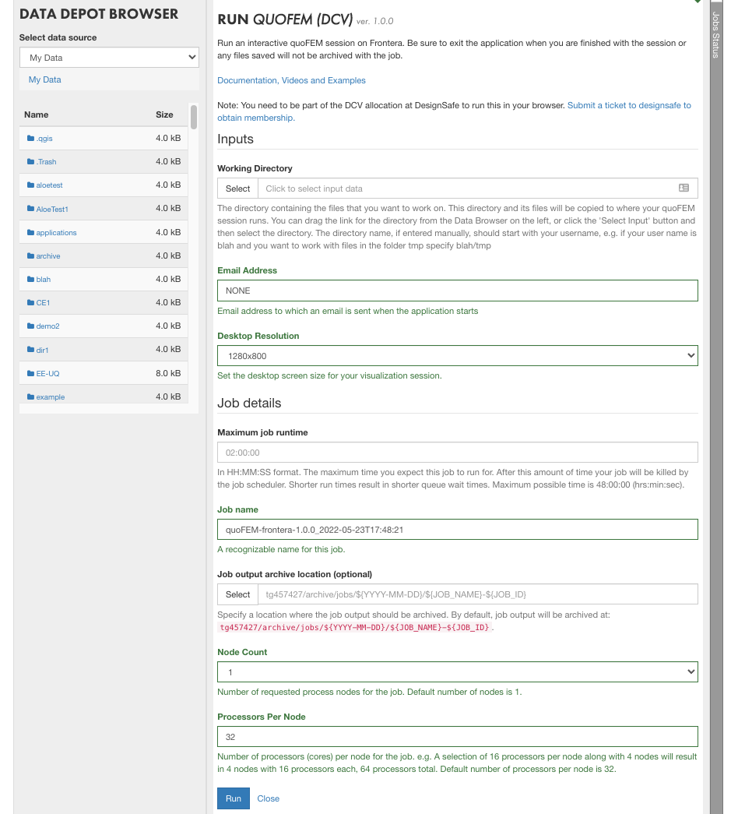
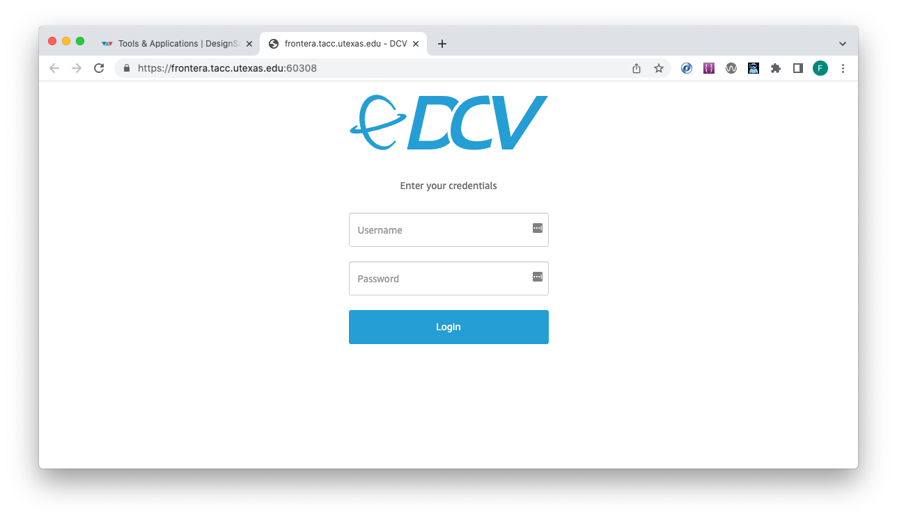

Running in Your Browser
It is possible to run HydroUQ remotely at DesignSafe through your browser using NICE DCV, a high-performance remote display protocol that provides users with a remote desktop experience. Running HydroUQ app in this manner requires that you create a directory in DataDepot and upload yur working files to that directory. The advantage of using the remote desktop service is that you don’t have to install HydroUQ app, the disadvantage is that you have to upload and download files and will sometimes have to wait awhile for your application to start.
To launch HydroUQ app in your browser you select the following link. This will open up a page as shown below:

This page requires that you fill in the following:
Working directory: the directory that contains the files that you want to work on. Tou can drag a directory froom the data depot browser on he left into this input.
Email Address: The address to which an email will be sent when job runs. The email will contain a link to follow to the actual running job.
Desktop Resolution: select the desktop screen size for the visualization.
Maximum Job runtime: The maximum time you expect this job to run for. Note that after this amount of time your job will be killed by the job scheduler.
Job name: A descriptive name you want to associate with the job.
Job output archive location (optional): location where the job output should be archived;
Node Count: Number of requested process nodes for the job. Note ONLY USE 1 here, as only 1 Node is used.
Processors per Node: numbers of cores per node for the job.
Once all information has been entered you can slect the RUN button to actually launch the job. Depending how busy the **Frontera** at TACC is, your job may start within 30sec or it may take longer. When it starts an email will be sent to the adress provided in the input containing a link to the runnig application, and if you have remained on the page a popup page will appear with a CONNECT button, which when pressed will take you to same address contained in the email. The page it takes you to is as shown below:

On this page you must re-enter your DesignSafe username and password.
Warning
You must be part of the DCV allocation at DesignSafe to run this. If you do not have such an alloction, you can request membership by submitting a ticket to DesignSafe. If you do not have membership, this last login step will fail even if you have provided your correct information!
DesignSafe has a limited number of licensces at it’s disposal, so your job may not always run.